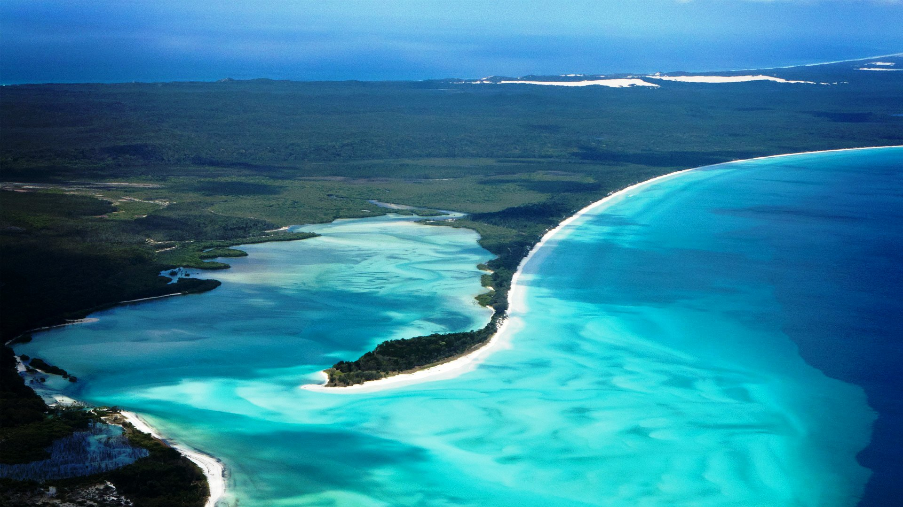

Fraser island is a place of exceptional beauty, with its long uninterrupted white beaches flanked by strikingly coloured sand cliffs, and over 100 freshwater lakes, some tea-coloured and others clear and blue all ringed by white sandy beaches. Ancient rainforests grow in sand along the banks of fast-flowing, crystal-clear creeks. Fraser Island is the only place in the world where tall rainforests are found growing on sand dunes at elevations of over 200 metres. The low "wallum" heaths on the island are of particular evolutionary and ecological significance, and provide magnificent wildflower displays in spring and summer.